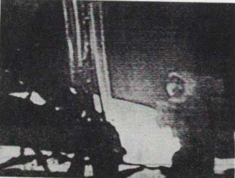

MEN WALK
ON MOON

Neil Armstrong and Edwin Aldrin landed in the Sea of Tranquility and became the first people to walk on the Moon. They explored its powdery surface, gathered samples and planted an American flag while Michael Collins orbited above in Columbia.